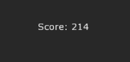
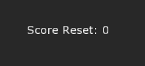

Saving and Loading Data
This lesson will cover how to use Zero Engine’s ObjectStore to save and load information between running game sessions.
Learning Objectives
- Being able to save and load game/object states using the object store.
| Vocabulary | ||
|---|---|---|
| Object Store | Archetype | Storing |
| Restoring | Data Type | |
Create a New Project
CreateNewProject
Level Setup
- Command :
CreateSpriteTextor - In the Properties Window
- Set Name to:
DisplaySavedDataText
- Set Name to:
We are going to use this text to display the data that will be saved between sessions.
- Add a new ZilchScript resource named:
DisplaySavedData- In the DisplaySavedData script
- Update DisplaySavedData class with the following code:
- In the DisplaySavedData script
class DisplaySavedData : ZilchComponent
{
// The value we'll eventually want to save
var Score: Integer = 0;
[Dependency]
var SpriteText: SpriteText;
function Initialize(init : CogInitializer)
{
Zero.Connect(this.Space, Events.LogicUpdate, this.OnLogicUpdate);
// Display the data
this.Owner.SpriteText.Text = "Score: `this.Score`";
}
function OnLogicUpdate(event : UpdateEvent)
{
// When space is pressed
if (Zero.Keyboard.KeyIsDown(Keys.Space))
{
// Increase the score
this.Score += 1;
// And update the display
this.Owner.SpriteText.Text = "Score: `this.Score`";
}
}
}
- Select the DisplaySavedDataText object
- In the Properties Window
- Save the project and run the game
If you did everything correctly, the game should look like this.
If you press Space the number will increase.
If you repeatedly restart the program you can see that the score doesn’t actually save. Because our variable in DisplaySavedData is saved in the game’s memory its data is lost when the game ends, and it will restart with a value of zero each time we run the game. We are going to change that. Our DisplaySavedData component will load and save our data via ObjectStore and while continuing to increment each time we press space.
Factor Out Saved Data into an Archetype
We are going to start by factoring out the information we plan on saving. We’ll do this by placing the properties we want to save on a new component.
- Add a new ZilchScript resource named:
DataSaver - In the DataSaver script
- Update DataSaver class with the following code:
class DataSaver : ZilchComponent
{
[Serialized]
var Score : Integer = 0;
}
We mark the variable as [Serialized] to explicitly tell Zero engine that this data will be saved between game sessions. Serializing is the process of doing what is necessary to store an object on the computer such that it can be restored at a later time; you can think of this as simply saving. Properties are also implicitly serialized. If we didn’t mark it [Serialized] (or [Property]), then the data would be reset each game session.
Now we’ll place the special factored out data, i.e. the data we put in our DataSaver component, in an archetype.
Command :
CreateTransformorIn the Properties Window
- Set Name to:
Data - Delete the Transform Component
- Add the DataSaver component
- Upload to Archetype named:
SavedData
- Set Name to:
In the Objects Window
- Delete the Data object you just created.
{kind=link}
In terms of the actual game nothing has changed, except for the fact we now have a new Archetype name SavedData that will hold our data that will be saved between game sessions.
Storing and Restoring Objects
Now we are going to change some code in our DisplaySavedData script, so that instead of using a member on DisplaySavedData, we are using the actual SavedData via ObjectStore.
- In the DisplaySavedData script
- Update DisplaySavedData class with the following code:
class DisplaySavedData : ZilchComponent
{
// This holds the location of our data
var DataCog: Cog = null;
[Dependency]
var SpriteText:SpriteText;
function Initialize(init : CogInitializer)
{
Zero.Connect(this.Space, Events.LogicUpdate, this.OnLogicUpdate);
// restore the values we saved: if Data does not exist create an instance of the
// archetype SavedData
// Notice that this CREATES an object, we store it so that we don't create new ones
// every time we want to reference the object.
this.DataCog = Zero.ObjectStore.RestoreOrArchetype("Data", "SavedData", this.Space);
this.Owner.SpriteText.Text = "Score: `this.DataCog.DataSaver.Score`";
}
function OnLogicUpdate(event : UpdateEvent)
{
// When space is pressed
if (Zero.Keyboard.KeyIsDown(Keys.Space))
{
// Get the information that was saved and update it
this.DataCog.DataSaver.Score += 1;
// Display it
this.Owner.SpriteText.Text = "Score: `this.DataCog.DataSaver.Score`";
// Save it for future use
Zero.ObjectStore.Store("Data", this.DataCog);
}
}
}
We could use ObjectStore.Restore to specify that we want to reload the data that was stored inside of a file called “Data”, but since we have yet to save a file by that name an attempt to load Data will give us an error:
Attempted to access a member of a null handle: Attempted to call a member function on a null object
So instead we used RestoreOrArchetype, so if our save file named “Data” does not exist we create a new object using the Archetype we provided.
Keep restarting the project to see that, whenever the game session loads, it will keep the last Score.
The game should look something like this:

Saved Files on Your Computer
The file you created when you saved the data can be found on your computer.
Navigate up to the folder containing Zero Projects; the default location for this is My Documents:
Find the corresponding folder within Zero that matches your project:
{kind=link}
{kind=link}
{kind=link}
Inside is where you will find the saved data. If you ever want to alter the saved file, or simply check that values are stored correctly, you can open it in a text editor:
{kind=link}
Here we can see the DataSaver component’s saved value, Score.
Clearing Saved Data
To clear this information you can
- Delete the data file.
- Use the Command :
ClearObjectStore - Clear the data with ObjectStore.ClearStore() or ObjectStore.Erase()
Let’s experiment with clearing it from code.
- In the DisplaySavedData script
- Update DisplaySavedData‘s OnLogicUpdate function with the following code:
function OnLogicUpdate(event : UpdateEvent)
{
// When space is pressed
if (Zero.Keyboard.KeyIsDown(Keys.Space))
{
// Get the information that was saved and update it
this.DataCog.DataSaver.Score += 1;
// Display it
this.Owner.SpriteText.Text = "Score: `this.DataCog.DataSaver.Score`";
// Save it for future use
Zero.ObjectStore.Store("Data", this.DataCog);
}
if (Zero.Keyboard.KeyIsPressed(Keys.Back))
{
// Delete our saved file
Zero.ObjectStore.ClearStore();
// Remove the no longer wanted save file's game object representation
this.DataCog.Destroy();
// Create a new object from the Archetype and store our handle to it
this.DataCog = Zero.ObjectStore.RestoreOrArchetype("Data", "SavedData", this.Space);
// Display it
this.Owner.SpriteText.Text = "Score Reset: `this.DataCog.DataSaver.Score`";
}
}
Now when you press BackSpace it clears the ObjectStore and the game should look something like this:

This clears all the information saved for this project. If you save more than one file out, i.e. with different names, you can choose to clear specific portions with Erase().
For instance, in this example you could replace Zero.ObjectStore.ClearStore(); with Zero.ObjectStore.Erase("Data");
Warning
If you choose to save out whole objects instead of factoring out the saved data into an object, you will be saving all of your properties, too.
An unintended side effect is that those items you don’t care about storing are still stored. Thus, if you save changes to your Archetype but have a the old values still written into the save file, you may not see the changes you expect. The old data is brought when you call RestoreOrArchetype since Restoring takes precedence over generating an object from an Archetype.
Consider the following:
You choose to make your Player an Archetype, so you can easily save its data. |br| When you save your Player object, it saves two Properties: the number of lives and the jump strength. |br| |br| You run the Project. |br| You use RestoreOrArchetype to create your Player. |br| The Player now has 3 lives and 10 jump strength. |br| Unable to reach a platform when you jump, you die and your lives are reduced to 2. |br| You save the Player’s information via ObjectStore. |br| You close the game. |br| |br| In the Editor, you change the jump strength on the Player Archetype to 20 and upload your changes so you can reach the platform. |br| |br| You run the project and again use RestoreOrArchetype to create your Player. |br| You have 2 lives and 10 jump strength. even though you uploaded your changes to the Archetype to have a jump strength of 20. |br| |br|
This is because it loaded the file saved not only the lives, which you may have wanted saved, but also the jump strength because it was also a Property.
Now that you know how to save basic data types you can save high scores, user settings, regular save game data. This also helps with having information span multiple levels.